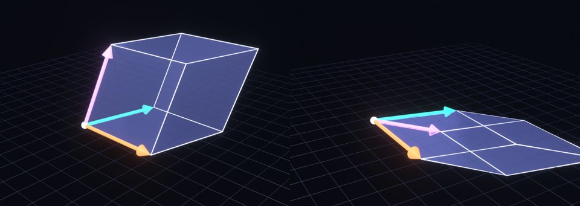
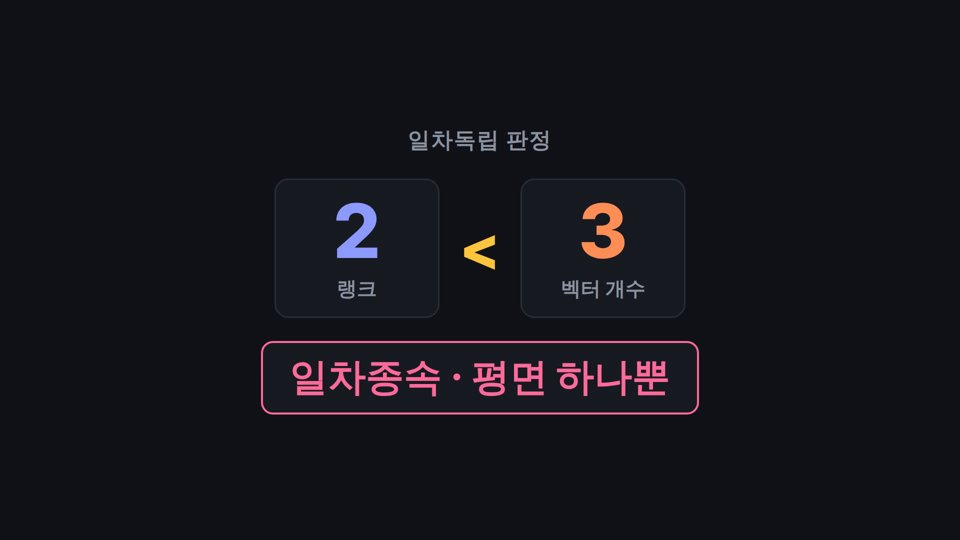
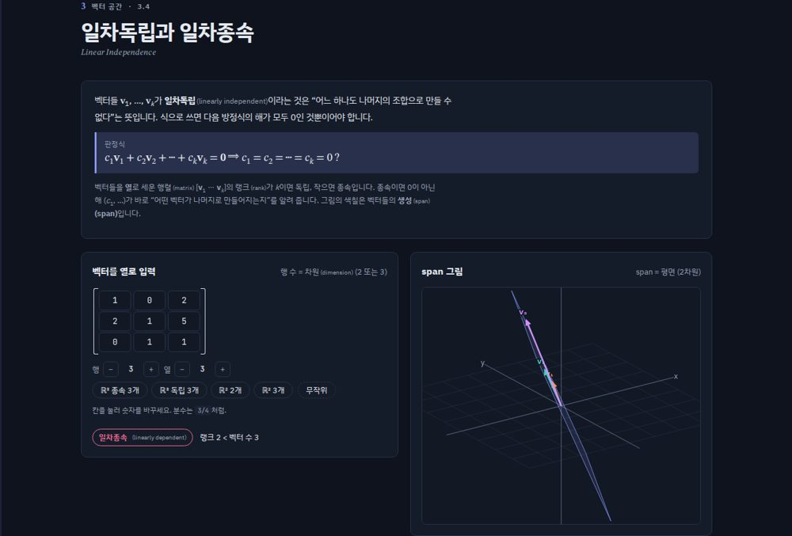

릴스 L1
벡터가 3개인데 3차원을 못 채운다?
약 28초벡터가 세 개인데, / 3차원을 다 못 채울 수도 있어요.
세 벡터로 상자를 만들어 볼게요. / 상자에 부피가 있으면 / 세 방향이 다 살아 있는 거예요. / 이게 일차독립.
그런데 세 번째 벡터를 / 앞의 두 벡터를 섞어서 만들면, / 상자가 평면으로 납작해져요.
벡터는 세 개인데, / 채우는 공간은 평면 하나뿐인 거죠. / 이게 일차종속이에요.
그래서 랭크가 벡터 개수보다 작으면 종속. / 정의 외우지 말고 / 이 그림으로 기억하세요.
릴스팔로우하고 댓글에 "선대" 남겨 주시면, / DM으로 사이트 링크 보내 드릴게요.
쇼츠직접 만든 무료 사이트예요. / 링크는 고정 댓글에 있어요.



장면 구성
| 시간 | 말 | 화면 |
|---|---|---|
| 0–3초 | 벡터가 세 개인데… | Blender 3D: 빛나는 세 벡터와 유리 상자가 천천히 회전 + 첫 화면 문구 |
| 3–9초 | 상자를 만들어… 일차독립 | Blender: 상자 부피 강조 → 사이트 3.4 녹화(벡터 입력, 'span = ℝ³ 전체', 일차독립 배지) |
| 9–16초 | 세 번째 벡터를 섞어서… 납작 | Blender: 셋째 벡터가 평면으로 내려가며 상자가 납작해지는 장면 (핵심 컷) |
| 16–21초 | 채우는 공간은 평면 하나… 일차종속 | 사이트 3.4: 셋째 열을 1열+2열로 바꿔 입력 → 'span = 평면', 일차종속 배지 |
| 21–25초 | 랭크가 벡터 개수보다 작으면 | HyperFrames 카드: 랭크 2 < 벡터 3 → 종속 |
| 25–30초 | CTA | 팔로우 + 댓글 '선대' → DM 배너 |